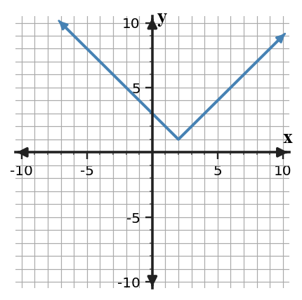

For $y=|x-4|+2$, identify the vertex and the minimum output.
For $y=|x-4|+2$, identify the vertex and the minimum output.
The vertex is $(4,2)$ and the minimum output is 2.
Use the graph. Write the absolute value equation shown and state the domain and range.

Use the graph. Write the absolute value equation shown and state the domain and range.
The graph has vertex $(2,1)$ and slopes $\pm1$, so the equation is $y=|x-2|+1$. The domain is all real numbers and the range is $y\ge1$.
A hiker distance model is $d(t)=|2t-8|$ for $0\le t\le 8$. Analyze whether the domain and vertex make sense if $t$ is hours after sunrise and $d$ is miles from camp.
A hiker distance model is $d(t)=|2t-8|$ for $0\le t\le 8$. Analyze whether the domain and vertex make sense if $t$ is hours after sunrise and $d$ is miles from camp.
The domain $0\le t\le8$ makes sense for an 8-hour trip. The vertex occurs when $2t-8=0$, so $t=4$ and $d=0$, meaning the hiker is at camp 4 hours after sunrise.
Create an absolute value model for a delivery driver whose distance from a warehouse decreases to $0$ after $4$ hours and then increases at the same rate. Include equation, domain, and interpretation of the vertex.
Create an absolute value model for a delivery driver whose distance from a warehouse decreases to $0$ after $4$ hours and then increases at the same rate. Include equation, domain, and interpretation of the vertex.
One model is $d(t)=r|t-4|$ for $0\le t\le T$, where $r$ is the hourly rate away from or toward the warehouse. For example, $d(t)=15|t-4|$ for $0\le t\le8$ has vertex $(4,0)$, meaning the driver is at the warehouse after 4 hours.
Solve $x^2-4x-1=0$ exactly.
Solve $x^2-4x-1=0$ exactly.
Use the formula: $x=\frac{4\pm\sqrt{16+4}}{2}=\frac{4\pm\sqrt{20}}{2}=2\pm\sqrt5$.
Approximate the solutions of $x^2-2x-8=0$.
Approximate the solutions of $x^2-2x-8=0$.
Factor: $x^2-2x-8=(x-4)(x+2)$, so the solutions are $x=4$ and $x=-2$.
For $b^2-4ac=0$, state how many real solutions there are.
For $b^2-4ac=0$, state how many real solutions there are.
A discriminant of 0 means there is exactly one real solution, a repeated root.
Solve or interpret the quadratic situation for Choosing and Defending Solution Methods. Show the algebra that supports your answer.
Select a method and solve $x^2-11x+30=0$.
Solve or interpret the quadratic situation for Choosing and Defending Solution Methods. Show the algebra that supports your answer.
Select a method and solve $x^2-11x+30=0$.
Factoring is efficient: $x^2-11x+30=(x-5)(x-6)$, so $x=5$ or $x=6$.
Solve or interpret the quadratic situation for Choosing and Defending Solution Methods. Show the algebra that supports your answer.
Select a method and solve $x^2+4x-3=0$ exactly.
Solve or interpret the quadratic situation for Choosing and Defending Solution Methods. Show the algebra that supports your answer.
Select a method and solve $x^2+4x-3=0$ exactly.
Completing the square works well: $x^2+4x=3$, so $(x+2)^2=7$. Therefore $x=-2\pm\sqrt7$.
Solve or interpret the quadratic situation for Choosing and Defending Solution Methods. Show the algebra that supports your answer.
Compare factoring and formula for $2x^2+7x+3=0$; use the more efficient one.
Solve or interpret the quadratic situation for Choosing and Defending Solution Methods. Show the algebra that supports your answer.
Compare factoring and formula for $2x^2+7x+3=0$; use the more efficient one.
Factoring is efficient because $2x^2+7x+3=(2x+1)(x+3)$. The solutions are $x=-\frac12$ and $x=-3$.
Structure Analysis. Analyze the quadratic evidence for Quadratic Modeling and Optimization. Write a conclusion and justify it with algebraic or graphical evidence.
Analyze $y=(x-4)^2+6$. Without expanding first, decide whether the equation $0=(x-4)^2+6$ has real solutions and justify.
Structure Analysis. Analyze the quadratic evidence for Quadratic Modeling and Optimization. Write a conclusion and justify it with algebraic or graphical evidence.
Analyze $y=(x-4)^2+6$. Without expanding first, decide whether the equation $0=(x-4)^2+6$ has real solutions and justify.
There are no real solutions because $(x-4)^2\ge0$, so $(x-4)^2+6\ge6$. The expression can never equal 0.
Synthesize Across Representations. Create or revise a quadratic task for Quadratic Formula using the constraints below.
- Include at least two representations among equation, table, graph, or context.
- Make the solution method visible from structure, not from a hint.
- Interpret the solution in words.
Use the provided graph as one representation. Synthesize the graph, the equation $x^2-9x+18=0$, and the quadratic formula calculation to explain why the two intercepts agree.

Synthesize Across Representations. Create or revise a quadratic task for Quadratic Formula using the constraints below.
- Include at least two representations among equation, table, graph, or context.
- Make the solution method visible from structure, not from a hint.
- Interpret the solution in words.
Use the provided graph as one representation. Synthesize the graph, the equation $x^2-9x+18=0$, and the quadratic formula calculation to explain why the two intercepts agree.
Factor to check the intercepts: $x^2-9x+18=(x-3)(x-6)$, so the graph should cross at $x=3$ and $x=6$. The quadratic formula gives $x=\frac{9\pm\sqrt{81-72}}{2}=\frac{9\pm3}{2}$, also 3 and 6.
Given the table, identify the initial value.
| $x$ | 0 | 1 | 2 | 3 |
|---|---|---|---|---|
| A | 11 | 33 | 99 | 297 |
| B | 45 | 36 | 28.8 | 23.04 |
Given the table, identify the initial value.
| $x$ | 0 | 1 | 2 | 3 |
|---|---|---|---|---|
| A | 11 | 33 | 99 | 297 |
| B | 45 | 36 | 28.8 | 23.04 |
The initial value is the output at $x=0$. For A it is 11, and for B it is 45.
Find an exponential function that passes through the points (2, 48) and (5, 750). Show how you found the multiplier before writing the equation.
Find an exponential function that passes through the points (2, 48) and (5, 750). Show how you found the multiplier before writing the equation.
For an exponential model, $b^3=750/48=15.625$, so $b=2.5$. Since $48=a(2.5)^2$, $a=7.68$.
One function is $y=7.68(2.5)^x$.
A student predicts that $y=100(0.9)^x$ will equal 0 after enough steps because it keeps decreasing. Assess the reasonableness of this claim using graph behavior and the multiplier.
A student predicts that $y=100(0.9)^x$ will equal 0 after enough steps because it keeps decreasing. Assess the reasonableness of this claim using graph behavior and the multiplier.
The claim is not reasonable. Multiplying by 0.9 repeatedly makes the values approach 0, but they remain positive for all finite $x$; the horizontal asymptote is $y=0$.
Design a short context that can be modeled by $y=64(0.75)^x$.
- State what x and y represent.
- Create a four-row table.
- Ask and answer one prediction question from your model.
Design a short context that can be modeled by $y=64(0.75)^x$.
- State what x and y represent.
- Create a four-row table.
- Ask and answer one prediction question from your model.
One context: a medicine amount starts at 64 mg and 75% remains each hour. A table for $x=0,1,2,3$ is $64,48,36,27$.
Example prediction: after 4 hours, $64(0.75)^4=20.25$ mg.